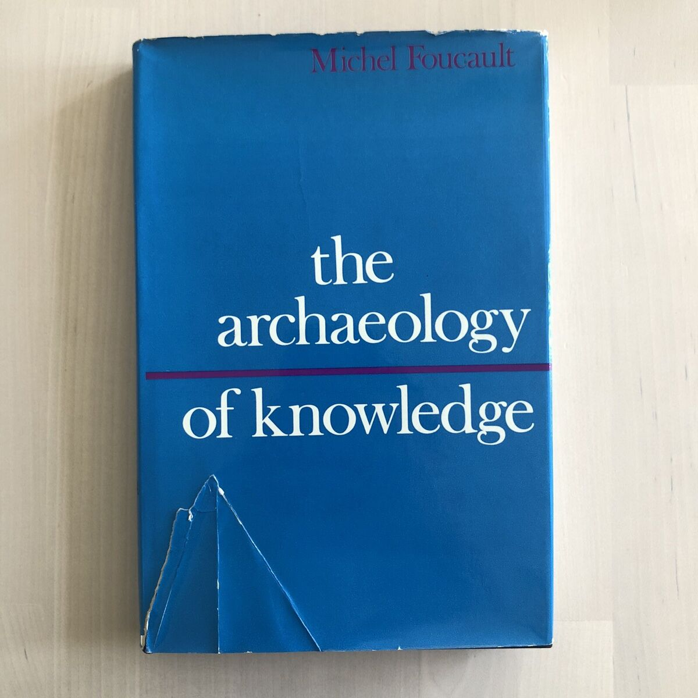

Slide Show is a lecture-to-book series inviting practicing graphic designers to
talk about the research, references, and working processes behind their
applied work. It opens up discussion and makes visible how graphic design
engages in research. The series asks designers to unpack their work by
reflecting on the materials they use, informal encounters they have, or
processes they’ve explored.
In this edition, nine second-year graphic design MA students will each give a
15-minute talk throughout the week, sharing the progress of the research
informing their final graduation projects.
"The archive is first the law of what can be said, the system that governs the appearance of statements as unique events. But the archive is also that which determines that all these things said do not accu- mulate endlessly in an amorphous mass, nor are they inscribed in an unbroken linearity, nor do they disappear at the mercy of chance external accidents; but they are grouped together in distinct figures, composed together in accordance with multiple relations, maintained or blurred in accordance with specific regularities; that which determines that they do not withdraw at the same pace in time, but shine, as it were, like stars, some that seem close to us shining brightly from far off, while others that are in fact close to us are already growing pale." — Michel Foucault
MLA. Foucault, Michel, 1926-1984. The Archaeology of Knowledge. New York :Harper & Row, 1976.
Archives, it is commonly said and often repeated, harbor an incredible potential to seduce those of us who use them, organize them, and otherwise come into contact with them. People in the humanities and design field alike, are obsessed with archives, and it has become an integral part of the vocabularies of academia and contemporary art.
Scholars, art critics, artists and museums have increasingly addressed the production, articulation, curation and destruction of archival material to discuss matters of presence and visibility, which can also be situated in a wider problematization of the relationship between art and documentation.
Interestingly, much of the recent interdisciplinary work on archives has emerged from fields beyond archival science, library and information studies, and history—the very disciplines that first developed detailed theories about archives and their classification systems. With the so-called "archival turn" in the humanities, which gained momentum after the publication of Michel Foucault’s The Archaeology of Knowledge (1976) and Jacques Derrida’s Archive Fever (1995), archivists and scholars have critically examined and warned against the seductive nature of the archives.
In fact, most people have probably never been inside a physical archive. Even fewer have gone beyond the reading rooms—those spaces where people wear white gloves and can’t use ink—to explore the storage vaults. Since most people have little firsthand experience with archives, it’s surprising how vivid, yet cliché, our idea of them is. In popular press, the word “archives” almost always appears alongside “dusty boxes.”
The Allure of the Archives by Arlette Farge. Translated by Thomas Scott-Railton. Yale University Press. 152 pages.
As Jacques Derrida pointed out in Archive Fever (1998), archives are not fixed or stable—they are shaped by the very act of recording and the fragile traces of their own creation. In its processes of writing and recording, the archive, to put it more simply, presents us with the very means of its own indelible vulnerability to reinterpretation, if not its fallibility as a document.
In Shaheen Merali's The Spectre (of Knowledge): The Recordings of the Cosmopolitan, he compares the archive to a 'roaming spirit – a visible but disembodied entity'. It is in this unstable, haunted state that the archive's susceptibility to re-inscription is produced, and it is this moment that I see the opportunity to negotiate and rewrite, visually or otherwise, the archive as a reality in waiting. But, if I indeed become an unreliable archivist – spinning the essence and ambivalence of the archive into formal and conceptual of uncertainty – then it is in artistic practices, that one finds how far we can challenge its historical authority.
Images are one of many ways that archival practices have been used in art. Marcel Duchamp’s La boîte-en-valise (1935–41), a portable collection of miniaturized reproductions of his work, carefully organized like an archive, is a key example. While not the first artist to treat his own work as an archive, Duchamp’s project remains one of the most structured and thought-provoking.
Marcel Duchamp, Box in a Valise (From or by Marcel Duchamp or Rrose Sélavy). 1935-41
Since Duchamp created this "museum-in-a-suitcase," artists have been fascinated by the museum as an archive—a place to reflect on the vast collection of historical objects, images, and the ways they are categorized and connected. By making detailed reproductions of his works and arranging them as both a personal collection and an archive, Duchamp was wrestling with a challenge: how to position his work between preserving tradition and the risk of being forgotten, as Foucault might describe it.
More than just a critique of museums or the way artworks are treated as objects, La boîte-en-valise is ultimately about both form and meaning. It reveals the structures that allow artworks to last over time while also showing how they can be altered, following what Foucault described as “the system that shapes and reshapes meaning.”

Andy Warhol, 138 of Andy Warhol’s 610 Time Capsules. Courtesy The Andy Warhol Museum, Pittsburgh. © 2007 Artists Rights Society (ARS), New York.
In graphic design, black-and-white aesthetics, halftone textures, and restrained typography are all editorial decisions that go together with working with archival material and the reproduction of it. In Visual Forms of Knowledge Production, Johanna Drucker argues that modernist archival aesthetics—grids, neutral typography, facsimile reproductions—suggest authority and control rather than openness. These methods create a false sense of stability, even though archives are unstable, biased, and subjective. Designers using archival aesthetics risk reproducing institutional power structures rather than challenging them.
Superstructures (Notes on Experimental Jetset / Volume 2 – Coll.
In The Filing Cabinet: A Vertical History of Information (2021), Craig Robertson argues that graphic design production that is informed by the archival document often mimics bureaucratic filing systems. The tools that designers use, from taxonomic layouts to tabular structures, and standardization often leans into the same tools used by corporate archives to organize, suppress, and classify knowledge. A visual language of record-keeping, rather than an exploration of history.
Installation view, Copy Machine Manifestos: Artists Who Make Zines, Brooklyn Museum, New York, 2023–2024.
When I started working on my graduation project, I had a hard time with dealing with the photographic archival material. Does reproducing an archival image mean reproducing a history? Altering a history? I do not claim to have the answer for this, but I remember during Linda Van Deursen’s workshop, I had a hard time using the archive I was working with. I found the images I was working with beautiful and alluring, I simply did not know where to start.
What about the archives, aside from the “entrancing stories” found within, is seductive? How and why do archives seduce, and what exactly is this “work of the seducer” of which Carolyn Steedman speaks in Dust: The Archive and Cultural History?
Harun Farocki, Images of the world and the inscription of war / Bilder der Welt und Inschrift des Krieges 1988 film still.
In Images of the World and the Inscription of War, Harun Farocki Explores how certain war photographs become historical evidence, while others (e.g., images of colonial violence) are omitted from mainstream archives. How archival images gain power through repetition—the more an image circulates, the more it is seen as "authentic". Under the advice of Linda, I made various reprints of the same image, in various sizes, and scribbled with my handwriting on top of it. Does this mark now mean I can take liberty with the document?
NEGREIROS, José de Almada.- K4: the blue square.- Lisbon: José Almada; Amadeo Souza Cardoso, 1917.- 20 p.; 23 cm.- E.
Facsimile. Courtesy of FarO.
A few days ago, we visited Ana Baliza and Alexandre Estrela at FarO. One of the projects they shared with us was a facsimile of the work of Almada Negreiros. The publication was reproduced similarly to the original, where some parts were riso printed, others were manually glued, metal plate stamped... etc.
The allure of the document passes through this slow and unrewarding task of recopying and reproducing. The task of recopying, by contrast, comes to feel so essential that it is indistinguishable from the rest of the work. An archival document reproduced is a fragment of a past time that you have succeeded in taming. Later, you will draw out the themes and formulate
interpretations. Reproducing is time-consuming, it cramps your shoulder and stiffens your neck. But it is through this action that meaning is discovered.
Thank you!